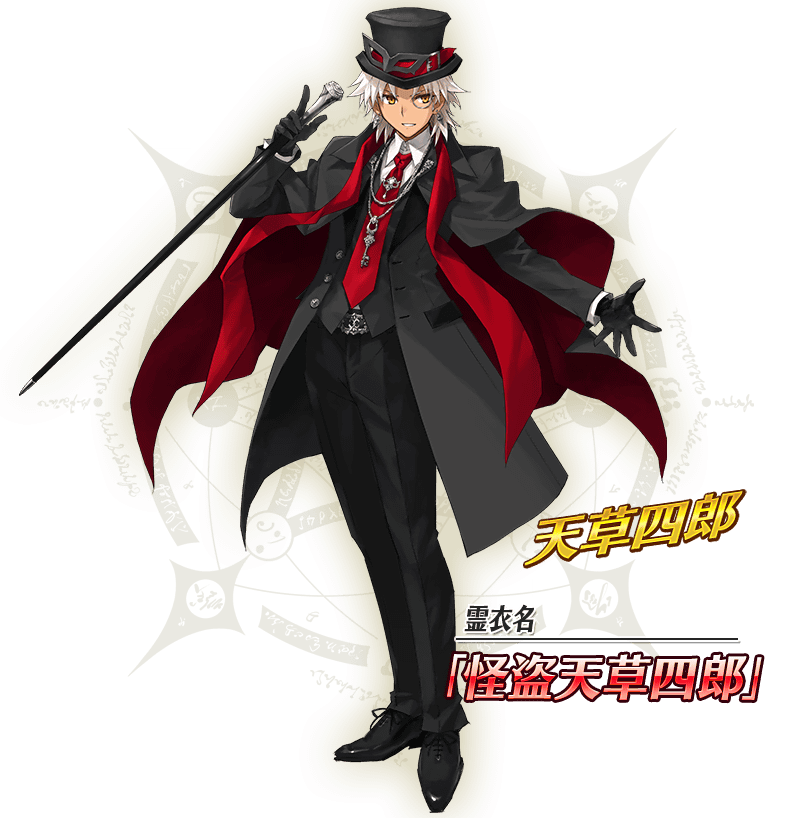

舉辦期間限定活動「聖杯怪盗天草四郎 ～鬧劇博物館～」！
展示具現化聖杯的美術館。突破難以攻陷的警備，偷出安置在館內最深處的聖杯，怪盗劇就此開幕！
本活動中，活動關卡會在管理室(ターミナル)出現！
除了享受故事的主線關卡逐日開放以外，在通過第一節後會開放收集活動道具的自由關卡。
攻略活動關卡，觀看故事的結尾吧！
※本頁面皆為開發中圖片。會有與實際圖片相異的情況。 ※一部份的關卡為日後開放。
◆活動舉辦預定◆
2021年3月3日(三) 17:00～(預定)
◆活動參加條件◆
滿足以下條件的御主才能參加
・通過「特異點F 炎上汙染都市 冬木」
本活動的期間中，「★5(SSR)天草四郎」在活動關卡中會得到自身的攻擊威力提升100%！
並且，「★5(SSR)天草四郎」以外的所有男性從者在活動關卡中會得到自身的攻擊威力提升50%、「★3(R)荊軻」自身的攻擊威力提升30%各自的加成！

◆有關從者的注意◆
※性別「男性」的從者之外，下述的從者也包含在活動加成的對象。
・★5(SSR)阿斯托爾福(Saber)
・★5(SSR)狄奧斯庫洛伊
・★5(SSR)俄里翁
・★5(SSR)恩奇杜
・★5(SSR)羅慕路斯＝奎里努斯
・★5(SSR)伽摩
・★5(SSR)始皇帝
・★5(SSR)平景清
・★5(SSR)魔王信長(織田信長)
・★5(SSR)蘆屋道滿
・★4(SR)夏爾・德翁
・★4(SR)凱涅厄斯
・★4(SR)阿斯托爾福(Rider)
・★4(SR)鬼一法眼
・★3(R)荊軻
※自2月28日(日) 18:30，在從者選擇畫面和從者強化畫面等，追加活動加成篩選器。由於是只顯示於活動活躍從者的便利功能，敬請活用。 ※「★5(SSR)魔王信長(織田信長)」是「★5(SSR)織田信長」靈基再臨到第3階段的話名稱會變成「★5(SSR)魔王信長。
「★5(SSR)天草四郎」的靈衣開放權做為期間限定活動「聖杯怪盗天草四郎 ～鬧劇博物館～」的報酬登場！
◆有關靈衣開放權的注意◆
※請注意未持有「★5(SSR)天草四郎」的情況，可入手靈衣開放權。但無法進行靈衣開放。

其他還有，期間限定「迦勒底男性精選2021」預定舉辦！
關於詳情，請自下述橫幅確認。
■「迦勒底男性精選2021」詳細情報